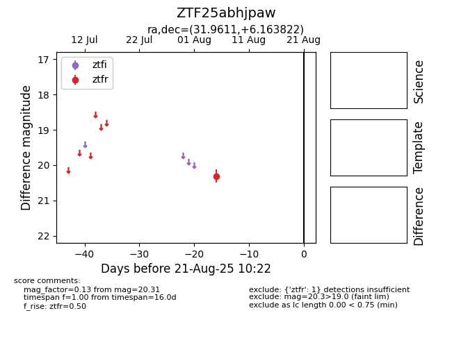

Target ZTF25abhjpaw at 2025-08-21 10:22, see:
FINK: fink-portal.org/ZTF25abhjpaw
Lasair: lasair-ztf.lsst.ac.uk/objects/ZTF25abhjpaw
ALeRCE: alerce.online/object/ZTF25abhjpaw
alt names
ZTF25abhjpaw (ztf,alerce)
coordinates:
equatorial (ra, dec) = (31.9611,+6.16382)
galactic (l, b) = (154.7708,-51.92124)
photometry
last ztfr=20.31
1 ztfr detections
